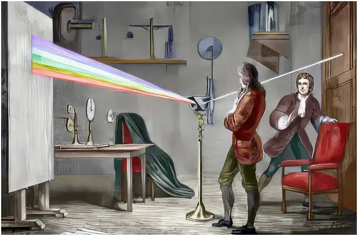
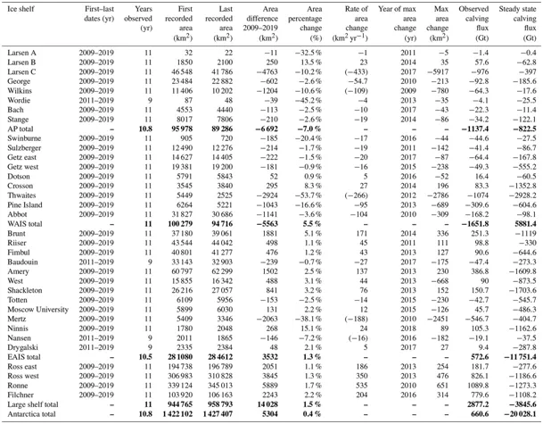
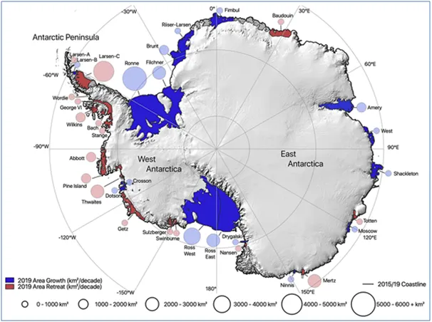

Rośnie czyli maleje.
Od kilku dekad brak logiki, czy konsekwencji w tekstach pisanych jest normą.Nagłówki są zwykle sprzeczne z treściami w rozwinięciu, a cytowane fakty sprzeczne z ich interpretacją. W ważnych azjatyckich, anglojęzycznych tytułach pojawiły się informacje o wzroście lodowego szelfu Antarktydy z podanymi źródłami publikacji naukowych. Zachodni ściek główny podjął temat, ale tylko po to, aby przestraszyć swych wyznawców jeszcze bardziej. Główny przekaz jest taki, że to tylko chwilowa przerwa a strasznym procesie topnienia lodów jaki obserwujemy od dekad.
"Weryfikatorzy" rzucili się też na moje publikacje oparte o 10 letnie badanie wszystkich możliwych źródeł przez Europejską Unię Geofizyczną. Skrupulatna analiza danych z lat 2009-2019 wskazuje, że bilans lodu wokół Antarktydy jest dodatni, lodowy kontynent rośnie. Tabela bilansu (+5304 km^2) w rozbiciu na wszystkie lodowce jest załącznikiem do publikacji, link tu, a poniżej tabela. https://tc.copernicus.org/articles/17/2059/2023/tc-17-2059-2023-t01.png

Nauka ma bardzo jasne zasady, jeśli coś twierdzisz musisz podać dowód. Autorzy badania dostarczają kilkadziesiąt stron dokumentacji i analizę w rozbiciu na 38 obszarów lodowego wybrzeża Antarktydy na przestrzeni 10 lat. Opublikowali swój dokument w 2023. Obecne doniesienia o wzroście lądolodu w ostatnich dwóch latach wpisują się w narrację potwierdzając trend z okresu poprzedniego.

Aby kwestionować pracę publikowaną w ramach copernicus.org, portalu recenzowanych czasopism naukowych o otwartym dostępie, trzeba przedstawić dowody. Podważanie takich prac bez twardszej dokumentacji to zwykła demagogia, czyli za wiki: " Demagogia (gr. dēmagōgía – prowadzenie ludu) – wpływanie na opinię publiczną w celu pozyskania i utrzymania zwolenników za pomocą nierealnych obietnic oraz zwodniczych haseł... Współcześnie oznacza to kłamanie na rzecz wygranej w wyborach lub schlebianie wyborcom, np. rozdawanie tzw. kiełbas wyborczych."
Link do badania https://tc.copernicus.org/articles/17/2059/2023/
Paweł Klimczewski